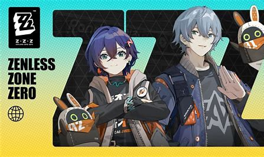

Game Zenless zone zero

Pendahuluan
Zenless Zone Zero (ZZZ) adalah sebuah game yang sedang ditunggu-tunggu oleh para penggemar game aksi dan petualangan. Dikembangkan oleh Hoyoverse, yang juga merupakan pembuat dari game populer Genshin Impact, ZZZ menjanjikan sebuah pengalaman bermain game yang unik dan menarik.
Latar belakang
Game ini mengambil setting di kota futuristik pasca-apokalips, New Eridu, yang telah hancur oleh bencana misterius yang disebut Hollow. Bencana ini mengakibatkan munculnya monster-monster bernama Ethereal di dalam Hollow.